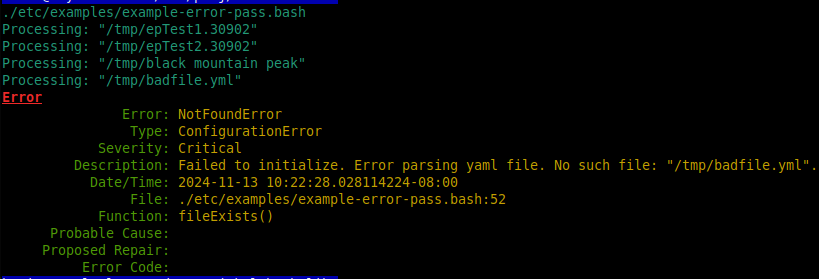

libError
Functions to support error passing
Overview
Error passing is a technique where lower layer functions set values in an error passing structure, and higher layer functions up along the call tree add more context and detail to form strong diagnostics.
epSet() is meant to be called at the lowest level of a call tree.
Generally the leaf most function does the epSet(). Each parent
function up along the call chain tests for a returned fail condition,
testing either the child function return code or checking the error
passing structure (EPS) itself using epHasError(). The parent then
contributes to the error passing structure by appending, prepending, and
setting additional fields to provide improved context and diagnostics to
its caller. At the level in the program where the error can be analyzed
for severity, corrective action is taken and the EPS is usually printed
or logged.
See Error Passing Example which is runnable. Output from a run:

Contains the following:
Lifecycle
epSet()
Modifiers
epPrepend()
epAppend()
epSetErrorName()
epSetErrorType()
epSetDescription()
epSetSeverity()
epSetProbableCause()
epSetProposedRepair()
epSetFileName()
epSetFuncName()
epSetLineNum()
epSetCodeNum()
Observers
epErrorName()
epErrorType()
epSeverity()
epFileName()
epFuncName()
epLineNum()
epCodeNum()
epFullDesc()
epDescription()
epProbableCause()
epProposedRepair()
epTimestamp()
epHasError()
Index
ksl::epSet
Set values in an error passing structure.
epSet [options…]
OPTIONS
-ca, –cause
-cn, –codeNum
-d, –description
-en, –errorName
-et, –errorType
-fi, –fileName
-fn, –funcName
-li, –lineNum
-rp, –repair
-sv, –severity
With no args, epSet works on the default ep1 error passing structure
(EPS). You can pass in ep1 explicitly or supply your own EPS. If the
given EPS does not already exist in the environment, then it is created.
These two are equivalent: epSet; and epSet ep1; Or supply your
own: epSet myEp;
Each call to epSet() initalizes all fields to empty/default values
with the timestamp set to current time, followed by setting any supplied
options. Most options are strings so they will need to be in double
quotes if they have embedded spaces.
Example
echo ksl::epSet # ep1 is initalized
echo ksl::epSet ep2 # ep2 is initalized
echo ksl::epSet --fi /home/abc # ep1 is initalized and file name is set
Arguments
$1 (array): is the Error Passing Structure (EPS). If not specified then EPS is
ep1
ksl::epSetDescription
Sets the description field in the given EPS.
Overwrites any previous description. EPS must already exist.
If two args are given, then $1 is EPS and $2 is the description. If one
arg is given, then $1 is the description and EPS ep1 is used.
Example
ksl::epSetDescription "Broken channel" # ep1 is used
ksl::epSetDescription ep2 "Broken channel" # ep2 is used
ksl::epSetDescription "" # sets ep1 description to empty
ksl::epSetDescription # error
Arguments
$1 (array): is either the EPS or the description depending on number of args as described above.
$2 (string): is the description if two args are given.
Exit codes
0: Success - description was set.
1: Failed - bad EPS or missing args.
Output on stderr
epSetDescription() missing args
arraySetValue() no such array
ksl::epDescription
Retrieve the description.
Example
echo $(ksl::epDescription) # ep1 is used
echo $(ksl::epDescription ep2) # ep2 is used
Arguments
$1 (array): is the EPS. If no args, then EPS
ep1is used.
Exit codes
0: Success
1: Failed - likely a bad EPS.
Output on stdout
the description
Output on stderr
arrayGetValue() no such array
ksl::epAppend
Appends given string to the description in the given EPS.
EPS must already exist.
If two args are given, then $1 is EPS and $2 is the string to append. If
one arg is given, then $1 is the string to append and EPS ep1 is
used.
Example
ksl::epAppend "Broken channel" # ep1 is used
ksl::epAppend ep2 "Broken channel" # ep2 is used
ksl::epAppend "" # append empty string to ep1
ksl::epAppend # error
Arguments
$1 (array): is either the EPS or the string to append depending on number of args as described above.
$2 (string): is the string to append if two args are given.
Exit codes
0: Success - string was appended.
1: Failed - bad EPS or missing args.
Output on stderr
epAppend() missing args
arraySetValue() no such array
ksl::epPrepend
Prepends given string to the description in the given EPS.
EPS must already exist.
If two args are given, then $1 is EPS and $2 is the string to prepend.
If one arg is given, then $1 is the string to prepend and EPS ep1 is
used.
Example
ksl::epPrepend "Broken channel" # ep1 is used
ksl::epPrepend ep2 "Broken channel" # ep2 is used
ksl::epPrepend "" # prepend empty string to ep1
ksl::epPrepend # error
Arguments
$1 (array): is either the EPS or the string to prepend depending on number of args as described above.
$2 (string): is the string to prepend if two args are given.
Exit codes
0: Success - string was prepended.
1: Failed - bad EPS or missing args.
Output on stderr
epPrepend() missing args
arraySetValue() no such array
ksl::epSetErrorName
Sets the error name in the given EPS.
Overwrites any previous error name. EPS must already exist.
If two args are given, then $1 is EPS and $2 is the error name. If one
arg is given, then $1 is the error name and EPS ep1 is used.
Choices for ErrorName
CaughtException
ConfigurationError
DataFormatError
AlreadyExistsError
IllegalStateError
InputOutputError
InvalidAccessError
InvalidArgumentError
LengthError
LogicError
NetworkError
NoPermissionError
NotFoundError
NotImplementedError
NullPointerError
NullValueError
OperationNotPossibleError
OverflowError
RangeError
SignalError
SystemCallError
TimeoutError
UnderflowError
Arguments
$1 (array): is either the EPS or the error name depending on number of args as described above.
$2 (string): is the error name if two args are given.
Exit codes
0: Success - error name was set.
1: Failed - bad EPS or missing args.
Output on stderr
epSetErrorName() missing args
arraySetValue() no such array
ksl::epErrorName
Returns the error name in the given EPS.
Example
ksl::epErrorName # ep1 is used
echo $(ksl::epErrorName ep2) # ep2 is used
str=$(ksl::epErrorName ep2) # ep2 is used
Arguments
$1 (array): is the EPS. If no args, then EPS
ep1is used.
Exit codes
0: Success
1: Failed - likely a bad EPS.
Output on stdout
the error name
Output on stderr
arrayGetValue() no such array
See also
ksl::epSetErrorType
Sets the error type in the given EPS.
Overwrites any previous error type. EPS must already exist.
If two args are given, then $1 is EPS and $2 is the error type. If one
arg is given, then $1 is the error type and EPS ep1 is used.
Choices for ErrorType
CommunicationsError
ConfigurationError
EnvironmentalError
EquipmentError
ProcessingError
QualityOfServiceError
Example
ksl::epSetErrorType "ProcessingError" # ep1 is used
ksl::epSetErrorType ep2 "ProcessingError" # ep2 is used
ksl::epSetErrorType "" # sets ep1 error type to empty
ksl::epSetErrorType # error
Arguments
$1 (array): is either the EPS or the error type depending on number of args as described above.
$2 (string): is the error type if two args are given.
Exit codes
0: Success - description was set.
1: Failed - bad EPS or missing args.
Output on stderr
epSetErrorType() missing args
arraySetValue() no such array
ksl::epErrorType
Returns the error type in the given EPS.
Example
ksl::epErrorType # ep1 is used
echo $(ksl::epErrorType ep2) # ep2 is used
str=$(ksl::epErrorType ep2) # ep2 is used
Arguments
$1 (array): is the EPS. If no args, then EPS
ep1is used.
Exit codes
0: Success
1: Failed - likely a bad EPS.
Output on stdout
the error type
Output on stderr
arrayGetValue() no such array
See also
ksl::epSetSeverity
Sets the error severity in the given EPS.
Overwrites any previous severity. EPS must already exist.
If two args are given, then $1 is EPS and $2 is the severity. If one arg
is given, then $1 is the severity and EPS ep1 is used.
Choices for Severity
Indeterminate
Critical
Major
Minor
Warning
Example
ksl::epSetSeverity "Critical" # ep1 is used
ksl::epSetSeverity ep2 "Critical" # ep2 is used
ksl::epSetSeverity "" # sets ep1 severity to empty
ksl::epSetSeverity # error
Arguments
$1 (array): is either the EPS or the severity depending on number of args as described above.
$2 (string): is the severity if two args are given.
Exit codes
0: Success - severity was set.
1: Failed - bad EPS or missing args.
Output on stderr
epSetSeverity() missing args
arraySetValue() no such array
ksl::epSeverity
Returns the severity in the given EPS.
Example
ksl::epSeverity # ep1 is used
echo $(ksl::epSeverity ep2) # ep2 is used
str=$(ksl::epSeverity ep2) # ep2 is used
Arguments
$1 (array): is the EPS. If no args, then EPS
ep1is used.
Exit codes
0: Success
1: Failed - likely a bad EPS.
Output on stdout
the severity
Output on stderr
arrayGetValue() no such array
See also
ksl::epSetFuncName
Sets the function name in the given EPS.
Overwrites any previous function name. EPS must already exist.
If two args are given, then $1 is EPS and $2 is the function name. If
one arg is given, then $1 is the function name and EPS ep1 is used.
Example
ksl::epSetFuncName "crcCheck()" # ep1 is used
ksl::epSetFuncName ep2 "crcCheck()" # ep2 is used
ksl::epSetFuncName "" # sets ep1 function name to empty
ksl::epSetFuncName # error
Arguments
$1 (array): is either the EPS or the function name depending on number of args as described above.
$2 (string): is the function name if two args are given.
Exit codes
0: Success - function name was set.
1: Failed - bad EPS or missing args.
Output on stderr
epSetFuncName() missing args
arraySetValue() no such array
ksl::epFuncName
Returns the function name in the given EPS.
Example
ksl::epFuncName # ep1 is used
echo $(ksl::epFuncName ep2) # ep2 is used
str=$(ksl::epFuncName ep2) # ep2 is used
Arguments
$1 (array): is the EPS. If no args, then EPS
ep1is used.
Exit codes
0: Success
1: Failed - likely a bad EPS.
Output on stdout
the function name
Output on stderr
arrayGetValue() no such array
ksl::epSetFileName
Sets the file name in the given EPS.
Overwrites any previous file name. EPS must already exist.
If two args are given, then $1 is EPS and $2 is the file name. If one
arg is given, then $1 is the file name and EPS ep1 is used.
Example
ksl::epSetFileName "config.yml" # ep1 is used
ksl::epSetFileName ep2 "config.yml" # ep2 is used
ksl::epSetFileName "" # sets ep1 file name to empty
ksl::epSetFileName # error
Arguments
$1 (array): is either the EPS or the file name on number of args as described above.
$2 (string): is the file name if two args are given.
Exit codes
0: Success - file name was set.
1: Failed - bad EPS or missing args.
Output on stderr
epSetFileName() missing args
arraySetValue() no such array
ksl::epFileName
Returns the file name in the given EPS.
Example
ksl::epFileName # ep1 is used
echo $(ksl::epFileName ep2) # ep2 is used
str=$(ksl::epFileName ep2) # ep2 is used
Arguments
$1 (array): is the EPS. If no args, then EPS
ep1is used.
Exit codes
0: Success
1: Failed - likely a bad EPS.
Output on stdout
the file name
Output on stderr
arrayGetValue() no such array
ksl::epSetLineNum
Sets the line number in the given EPS.
Overwrites any previous line number. EPS must already exist.
If two args are given, then $1 is EPS and $2 is the line number. If one
arg is given, then $1 is the line number and EPS ep1 is used.
Example
ksl::epSetLineNum "55" # ep1 is used
ksl::epSetLineNum ep2 "55" # ep2 is used
ksl::epSetLineNum "" # sets ep1 line number to empty
ksl::epSetLineNum # error
Arguments
$1 (array): is either the EPS or the line number depending on number of args as described above.
$2 (string): is the line number if two args are given.
Exit codes
0: Success - line number was set.
1: Failed - bad EPS or missing args.
Output on stderr
epSetLineNum() missing args
arraySetValue() no such array
ksl::epLineNum
Returns the line number in the given EPS.
Example
ksl::epLineNum # ep1 is used
echo $(ksl::epLineNum ep2) # ep2 is used
str=$(ksl::epLineNum ep2) # ep2 is used
Arguments
$1 (array): is the EPS. If no args, then EPS
ep1is used.
Exit codes
0: Success
1: Failed - likely a bad EPS.
Output on stdout
the line number
Output on stderr
arrayGetValue() no such array
ksl::epSetCodeNum
Sets a code number in the given EPS.
Overwrites any previous code number. EPS must already exist.
If two args are given, then $1 is EPS and $2 is the code number. If one
arg is given, then $1 is the code number and EPS ep1 is used.
Example
ksl::epSetCodeNum "999" # ep1 is used
ksl::epSetCodeNum ep2 "999" # ep2 is used
ksl::epSetCodeNum "" # sets ep1 code number to empty
ksl::epSetCodeNum # error
Arguments
$1 (array): is either the EPS or the code number depending on number of args as described above.
$2 (string): is the code number if two args are given.
Exit codes
0: Success - code number was set.
1: Failed - bad EPS or missing args.
Output on stderr
epSetCodeNum() missing args
arraySetValue() no such array
ksl::epCodeNum
Returns the code number in the given EPS.
Example
ksl::epCodeNum # ep1 is used
echo $(ksl::epCodeNum ep2) # ep2 is used
str=$(ksl::epCodeNum ep2) # ep2 is used
Arguments
$1 (array): is the EPS. If no args, then EPS
ep1is used.
Exit codes
0: Success
1: Failed - likely a bad EPS.
Output on stdout
the code number
Output on stderr
arrayGetValue() no such array
ksl::epSetCause
Sets a probable cause string in the given EPS.
Overwrites any previous cause. EPS must already exist.
If two args are given, then $1 is EPS and $2 is the cause. If one arg is
given, then $1 is the cause and EPS ep1 is used.
Example
ksl::epSetCause "no power" # ep1 is used
ksl::epSetCause ep2 "no power" # ep2 is used
ksl::epSetCause "" # sets ep1 cause to empty
ksl::epSetCause # error
Arguments
$1 (array): is either the EPS or the cause depending on number of args as described above.
$2 (string): is the cause if two args are given.
Exit codes
0: Success - cause was set.
1: Failed - bad EPS or missing args.
Output on stderr
epSetCause() missing args
arraySetValue() no such array
ksl::epCause
Returns the probable cause in the given EPS.
Example
ksl::epCause # ep1 is used
echo $(ksl::epCause ep2) # ep2 is used
str=$(ksl::epCause ep2) # ep2 is used
Arguments
$1 (array): is the EPS. If no args, then EPS
ep1is used.
Exit codes
0: Success
1: Failed - likely a bad EPS.
Output on stdout
the cause
Output on stderr
arrayGetValue() no such array
ksl::epSetRepair
Sets a probable repair string in the given EPS.
Overwrites any previous repair. EPS must already exist.
If two args are given, then $1 is EPS and $2 is the repair. If one arg
is given, then $1 is the repair and EPS ep1 is used.
Example
ksl::epSetRepair "plug it in" # ep1 is used
ksl::epSetRepair ep2 "plug it in" # ep2 is used
ksl::epSetRepair "" # sets ep1 repair to empty
ksl::epSetRepair # error
Arguments
$1 (array): is either the EPS or the repair depending on number of args as described above.
$2 (string): is the repair if two args are given.
Exit codes
0: Success - repair was set.
1: Failed - bad EPS or missing args.
Output on stderr
epSetRepair() missing args
arraySetValue() no such array
ksl::epRepair
Returns the probable repair in the given EPS.
Example
ksl::epRepair # ep1 is used
echo $(ksl::epRepair ep2) # ep2 is used
str=$(ksl::epRepair ep2) # ep2 is used
Arguments
$1 (array): is the EPS. If no args, then EPS
ep1is used.
Exit codes
0: Success
1: Failed - likely a bad EPS.
Output on stdout
the repair
Output on stderr
arrayGetValue() no such array
ksl::epTimestamp
Returns the timestamp in the given EPS.
The value for timestamp was established on the most recent call to epSet().
Example
ksl::epTimestamp # ep1 is used
echo $(ksl::epTimestamp ep2) # ep2 is used
str=$(ksl::epTimestamp ep2) # ep2 is used
Arguments
$1 (array): is the EPS. If no args, then EPS
ep1is used.
Exit codes
0: Success
1: Failed - likely a bad EPS.
Output on stdout
the timestamp
Output on stderr
arrayGetValue() no such array
ksl::epHasError
Returns true if EPS is carrying an error.
The EPS is considered to be carrying an error if either the description field or the code number field is non-empty.
Example
if ksl::epHasError; then epPrint; fi # ep1 is used
[[ ksl::epHasError ep2 ]] && return 1 # ep2 is used
Arguments
$1 (array): is the EPS. If no args, then EPS
ep1is used.
Exit codes
0: true - EPS is carrying an error.
1: false - EPS is not carrying an error.
Output on stderr
epHasError() no such array
ksl::epPrint
Prints the given EPS in a formatted style to stdout.
$1 is the EPS and optional. If not supplied the default EPS of “ep1” is used.
Example
ksl::epPrint # ep1 is used
ksl::epPrint ep2 # ep2 is used
Arguments
$1 (array): is the EPS. If no args, then EPS
ep1is used.
Exit codes
0: Success
1: Failed - likely a bad EPS.
Output on stdout
See output from example script at top of this file.
Output on stderr
epPrint() no such array